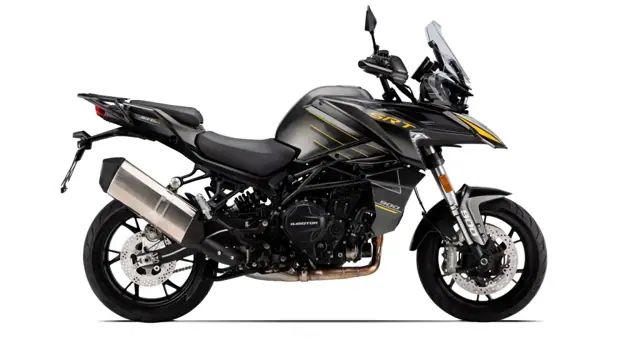
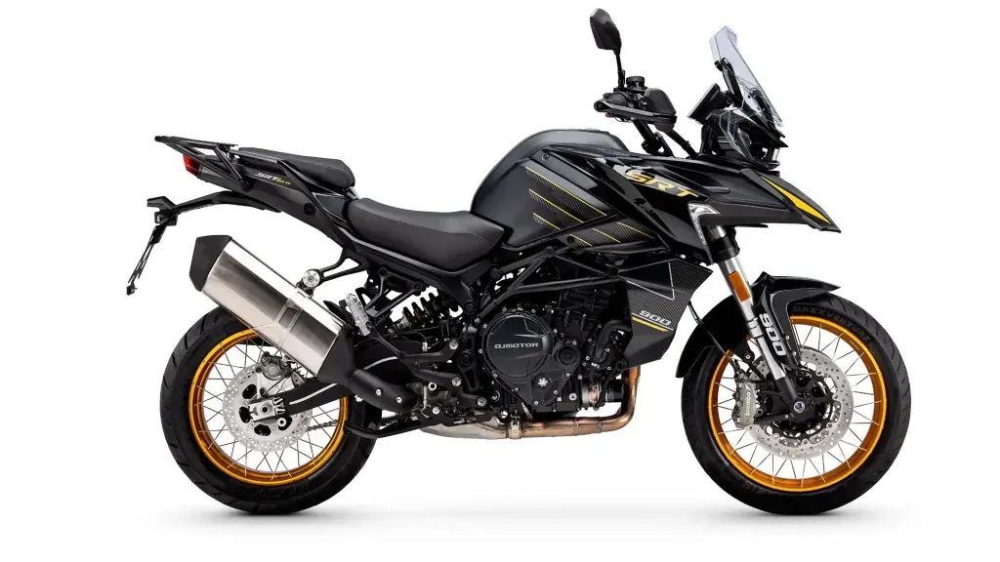
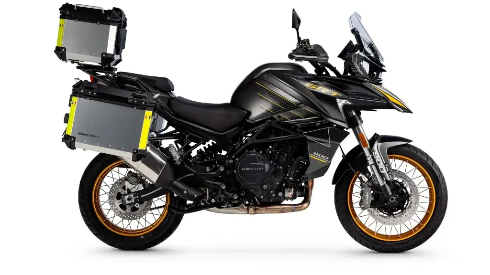
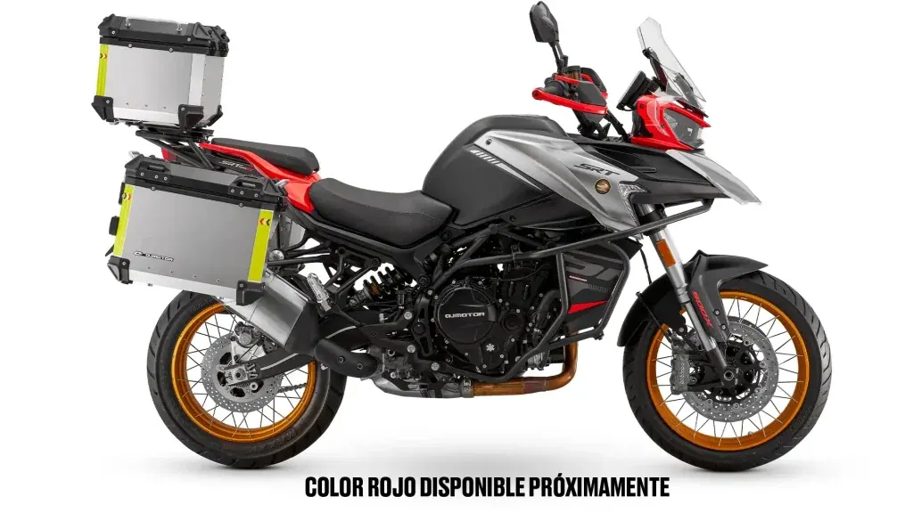
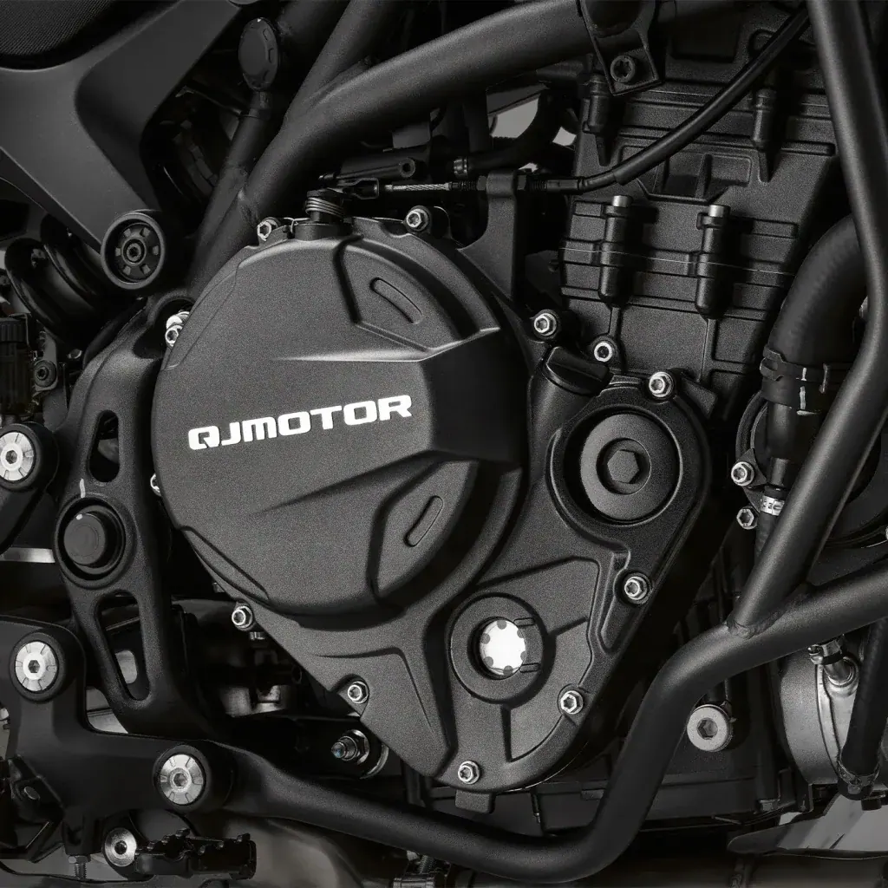
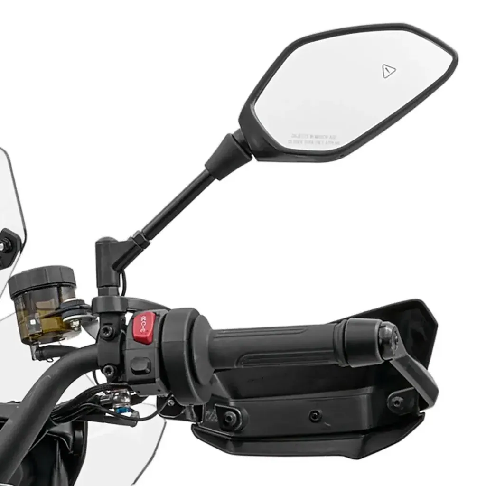

QJ Motor
SRT 900S
A2 900 cc · 70 kW · Adventure
Propuesta de OpsPilot para Expomoto Córdoba, en revisión. No es la web oficial: expomotocordoba.es
Inicio › Motos › QJ Motor › SRT 900SX

QJ Motor
MOTOR BICILÍNDRICO 904 cc DE 8 VÁLVULAS
Precio y financiación: te los damos al momento por teléfono (pendientes de publicar en la web).




con refrigeración líquida, esta versión Full Power ofrece 95 CV (70 kW) de potencia, con la opción de limitarla sin coste a 47 CV (35 kW).
Sistema ADAS (Advanced Driver Assistance System): Sistema avanzado mediante sensor trasero que asiste al conductor con funciones como alerta de cambio de carril, Rear Collision Warning (RCW), Emergency Stop Signal (RSS), control de ángulo muerto y detección de peatones u obstáculos, mejorando la seguridad activa.
Control de crucero: Mantiene la velocidad de forma automática para una conducción más cómoda y segura.
El quickshifter bidireccional permite realizar cambios de marcha sin intervención del embrague ni corte de acelerador, facilitando transiciones rápidas y precisas que optimizan la dinámica y respuesta del motor en conducción deportiva. Por su parte, el embrague antirrebote minimiza el rebote y bloqueo de la rueda trasera durante reducciones agresivas, mejorando la estabilidad y evitando pérdidas de tracción en frenadas y curvas exigentes.
DELANTERA : Horquilla invertida Marzocchi de 43 mm, multi-regulable en precarga, compresión y extensión , que permite adaptar la suspensión a diferentes terrenos y estilos de pilotaje.
TRASERA : Monoamortiguador Marzochi regulable en precarga y extensión . Permitiendo ajustar la suspensión según peso, estilo de conducción y terreno
Doble disco delantero mordido por pinzas radiales monobloque Brembo de 4 pistones , lo que garantiza una respuesta de frenado potente, progresiva y con excelente modulación.